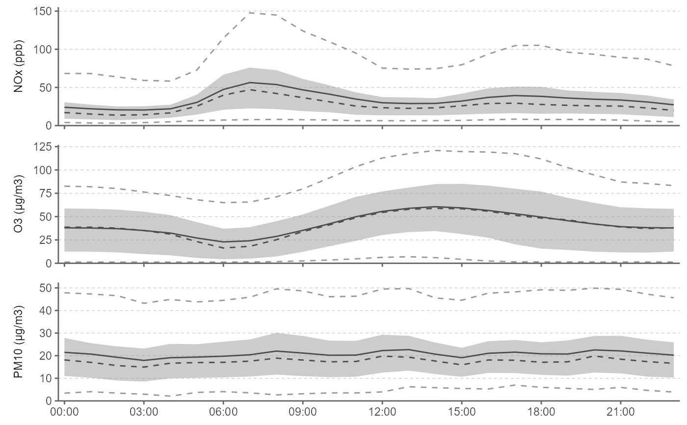

ggplot2-wrapper to summarise and plot data (of rOstluft::format_rolf() format) for diurnal time course-stats
Source: R/ggperiodic.R
ggdiurnal.Rdggplot2-wrapper to summarise and plot data (of rOstluft::format_rolf() format) for diurnal time course-stats
ggdiurnal( data, y = "value", fun = list(middle = "mean", middle2 = "median", ymin = "percentile05", lower = "percentile25", upper = "percentile75", ymax = "percentile95"), nmin = 3, ribbon_color = "gray60", middle_color = "gray30", expand_xscale = 0.025 )
Arguments
| data | a data.frame or tibble containing the data |
|---|---|
| y | a character string specifying the taget variable to be summarised, usually "value".
outcomes of |
| fun | function or list of functions for summary, can be named (then the outut stat is named after the function's name);
Strings matching the regular expression |
| nmin | numeric, minimum number of values for fun, if n < nmin: NA is returned |
| ribbon_color | character string for specifying the ribbon color. |
| middle_color | character string for specifying the middle's color. |
| expand_xscale | multiplicative range expansion factor |
Value
ggplot2::ggplot() object
Examples
library(ggplot2) fn <- rOstluft.data::f("Zch_Stampfenbachstrasse_2010-2014.csv") data_min30 <- rOstluft::read_airmo_csv(fn) %>% dplyr::filter(parameter %in% c("NOx", "O3", "PM10")) data_h1 <- rOstluft::resample(data_min30, new_interval = "h1") ggdiurnal(data_h1)#> Warning: attributes are not identical across measure variables; #> they will be dropped#> Warning: `expand_scale()` is deprecated; use `expansion()` instead.# change scale_expands: less margin on x, no expand lower y and set to zero ggdiurnal(data_h1, expand_xscale = 0.01) + scale_y_continuous(limits = c(0, NA), expand = expand_scale(mult = c(0, 0.05))) + theme(panel.spacing.y = unit(12, "pt"))#> Warning: attributes are not identical across measure variables; #> they will be dropped#> Warning: `expand_scale()` is deprecated; use `expansion()` instead.#> Warning: `expand_scale()` is deprecated; use `expansion()` instead.# 30min resolution, add title, x/y label (must set theme elements) ggdiurnal(data_min30) + ggtitle("Diurnal Zuerich Stampfenbachstrasse 2010-2014 ") + ylab("parameter") + xlab("time") + theme( axis.title = element_text(), axis.title.x = element_text() )#> Warning: attributes are not identical across measure variables; #> they will be dropped#> Warning: `expand_scale()` is deprecated; use `expansion()` instead.